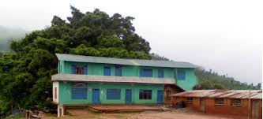

My name is Suraj Mishra. I was born in August 21 1991 in a remote village of Dhading district of Nepal in a simple family. I started to go to school at Bal Jyoti Primary School when I was 6 years old. After studying class one then my parents put me in a english school and I spent 2 years of study there and later I joined Shree Shami Bhanjyang Higher Secondary School from class 5, which was a government school. The school was far and I had to walk about 40 minutes from my home with bag full of books and copies. From the begining of my studies I used to be first in class and everybody loved me there. I liked reading and I was punctual and discplined student in front of teachers eyes. I spent around 6 years in that school and finished my schooling with distinction division. Until that time, I was the first student in the history of school to score distinction division in national school level exam. It was quite a proud moment for me, my parents, and school family. I received honours and prizes from different organizations, political parties and school as well. I have wrote here about my schooling and I will write more later on but let me list here down what I studied during my school level.
Shree Shami Bhanjyang Higher Secondary School, Dhading, Nepal, 2010
Here I have listed my compulsory and optional studies during my school level.
After finishing my school level, I wanted to go to science stream so I had to go to capital city Kathmandu, which was the nearest possible option for me. I leaved my home village with tears where I spent my beautiful 16 years with there stone and mud with both happy and sorrows, easy and difficulties. I went to capitol city Kathmandu with high dreams of becoming a great person in my future. I started learning computer. It was the first time when I saw real computer.
I gave an entrance exam for my higher education in some couple of education institutions and in most of them I got full scholorship because I came from the remote part of country and from government school. At the same time I received a popular Mahatma Gandhi scholorship from the government of India, which later on supported me financially.
It was quite challenging for me during the first months at Kamana because of the language. Since I studied in nepali language in my school and then there the study medium was english. The major subjects taht I studied were physics, chemistry and mathematics. I met friends from different parts of country. We had a diversity of background. Some of us became very close and I have some very good friends and I have listed their names below in the table.
| No. | First Name | Last Name |
|---|---|---|
| 1 | Babu Ram | Rijal |
| 2 | Ravi | Maharjan |
| 3 | Achyut | Panta |
| 4 | Milan | Aryal |
| 5 | Bipin | Dhakal |
After completing my higher education, I decided to go for foreign studies. Since I had a simple family background I could not afford to foreign education fees I needed to get full scholorship and Finland became my first option because that time education was totally free and still it is free but not for foreign nationalities. Then I gave entrance exam for bachelors program in plastic technology at Arcada University of Applied Sciences from Nepal. I passed an entrance exam and I applied visa from the Finnish embassy in Kathmandu and I came to Finland, the beautiful country in the earth. You can know about my studies in Finland from here.